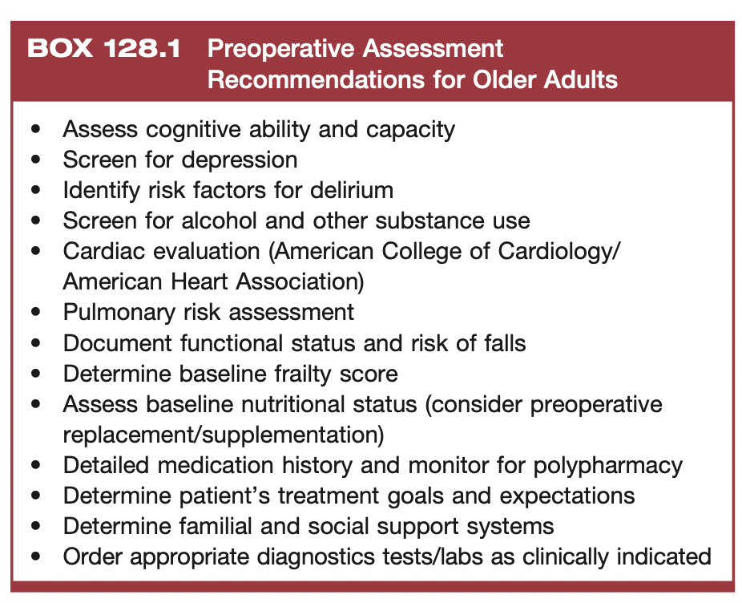
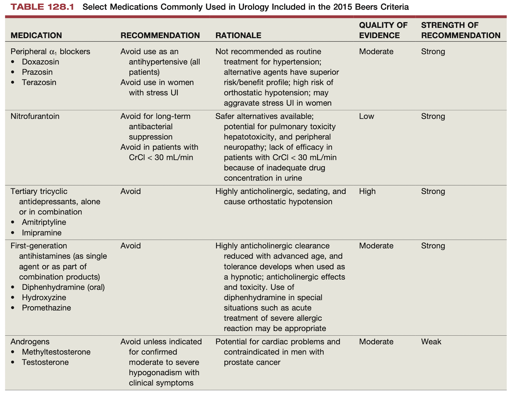
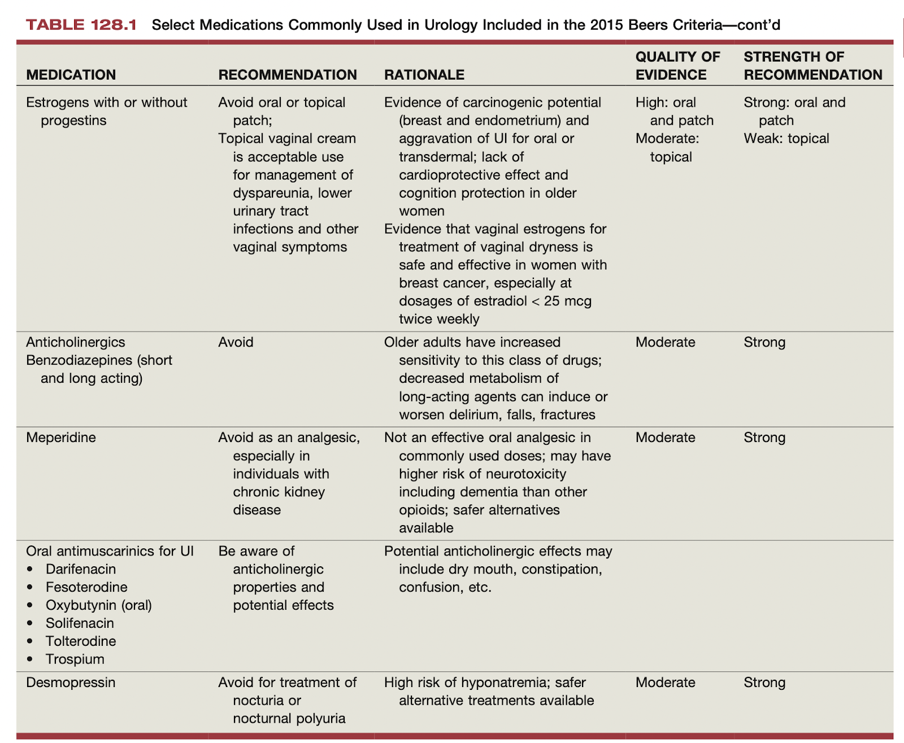
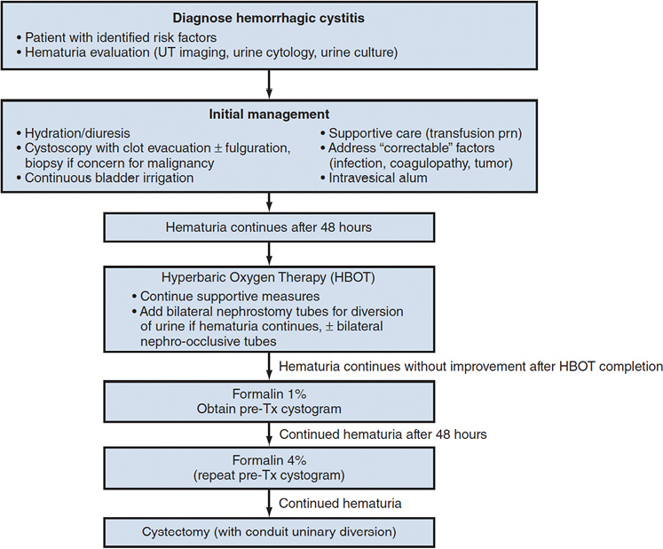
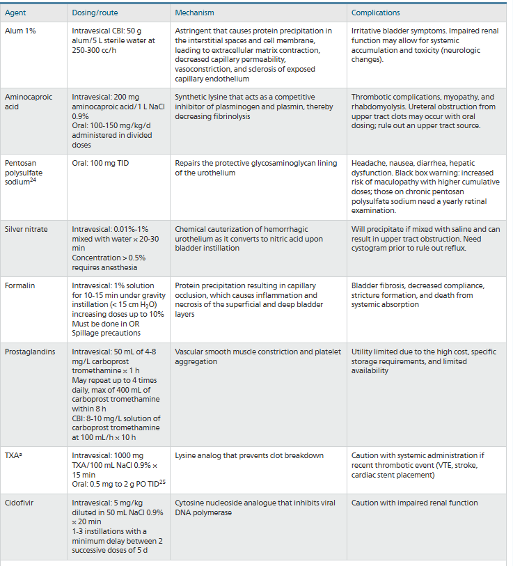
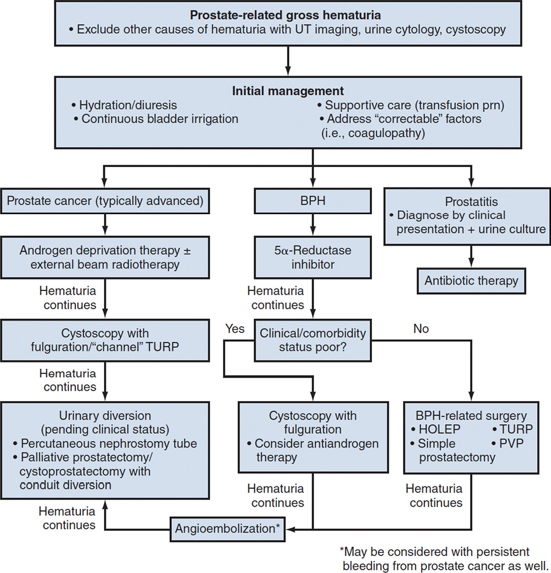

UROLOGY NOTES
by Jay Kim
template
|
|
mortality is ***%
intraoperative | early postoperative | late postoperative |
|
Topics to Review
Quick Notes
OSCE stations
- post prostatectomy incontinence - AUS complications, contraindications
- infertility guidelines
- functional urology questions
- autonomic dysreflexia, botox therapy indications/contraindications
- stone management in pregnancy
- postnatal hydro
- bosniak cyst
- nmibc and PCa screening
SBK rounds
- genetic predisposition to radiation - ATM gene
- rectourethral fistula management
Clinical Decision Making
HPI
- pain
- onset, duration, prior episodes, localization of pain (tenderness vs referred pain), severity, medications used to alleviate, hx of chronic pain
- pain can be from distension from obstruction or inflammation of parenchyma in the GU organ
- obstruction - colicky-type pain, intermittent pain, always moving to seek position for comfort
- parenchyma - constant pain, lays still, seeking not to exacerbate pain with motion
- referred pain or associated symptoms
- e.g. paroxysmal N/V from celiac plexus visceral innervation in kidney presentations
- e.g. testicular or labial pain can be from ipsilateral obstructing distal ureteral stone
- renal pain
- ipsilateral CVA lateral to vertebral spine and inferior to 12th rib
- ddx: MSK, intraperitoneal
- intraperitoneal tends to be more anterior, peritonitis associated with diaphragmatic irritation
- ureteral pain
- distension and hyperperistalsis can result in pain from ureteral spasm; convey through T11-L1 dorsal ganglia
- referred pain to testicle/labia
- irritative voiding symptoms at UVJ
- bladder pain
- suprapubic pain
- cystitis worse with bladder distension; improves with voiding; sharp stabbing pain at end of urination
- retention has profound desire to urinate without ability
- prostatic pain
- deep within pelvis; irritative voiding symptoms
- ddx: rectal pain
- penile pain
- flaccid penis: ddx includes paraphimosis, ulcerative lesions, referred pain from cystitis/prostatitis
- rigid penis: priapism, Peyronies
- scrotal pain
- skin - inflammation of scrotal skin
- internal - epididymo-orchitis, torsion
- referred - kidney/ureter
- hematuria
- most common cause of GH in age>50y is bladder cancer
- presence of urologic cancer in up to 25% of patients
- rule out pseudohematuria (urine appear red due to dehydration, from food/drugs) - obtain clean urine sample and microscopy for RBCs
- stage of stream
- initial - prostate/urethral
- terminal - bladder neck irritation
- entire stream - unknown
- shape - vermiform (upper tract), cuboid (bladder)
- LUTS
- obstructive
- urinary retention, incomplete urinary emptying, urinary frequency, intermittency, weak flow, straining (Crede voiding), postvoid dribbling (occurs due to escape of urine in urethra is not milked back; more shaking)
- irritative
- frequency (normal up to 5-6), urgency, dysuria, nocturia (normal up to 2)
- daytime frequency without nocturia - ?psychogenic (anxiety)
- nocturia without daytime frequency - nighttime polyuria
- can be sign of occult bladder cancer
- can be measured objectively by AUA and IPSS scores
- incontinence
- involuntary passage of urine
- stress - due to increased abdominal pressure
- urge - urine coincident with sensation of urinary urgency
- mixed - both stress and urge
- continuous - constant wetness independence of abdominal pressure or urge to urinate; ddx includes urinary fistula, ectopic ureter
- urinary incontinence only during the day and not at night can be due to saccular upper pole moeity of ectopic ureter in the more dependent in supine position while sleeping
- pseudoincontinence - perineal wetness without true urinary incontinence on exam; ddx: chronic vaginal discharge, retention of urine due to severe labial folds
- overflow - intravesical pressure exceeds urethral outlet resistance; more likely to occur at night since guarding reflect is less effective
- functional - incontinence due to limited mobility or access to toilet
- enuresis - incontinence during sleep is normal up to 3y of age
- 15% in 5y of age, 1% in 15y of age
- primary enuresis (always present) 6y needs evaluation for ectopic ureter in female patient
- sexual dysfunction
- erectile dysfunction
- inability to attain or maintain penile erection sufficient for satisfactory intercourse
- 50% of men <40y
- assess for situational ED, nocturnal tumesence, IIEF or SHIM to monitor erectile function, orgasmic function, sexual desire, intercourse, overall satisfaction
- loss of libido
- could be due to hypogonadism
- amount of TT necessary for libido is usually less than full stimulation of prostate/SV therefore the ones with adequate ejaculatory volumes are unlikely to have hypogonadism severe to cause loss of libido
- subjective measure - validated questionnaires include ADAM (Androgen Deficiency in Aging Questionnaire), Aging Male Survey, Massachusetts Male aging Study Questionnaire
- Hypogonadism Related Symptom Scale may correlate better with hypogonadism
- premature ejaculation
- defined as <1 min if lifelong or <3min if acquired; inability to delay ejaculation with negative personal consequence
- intravaginal ejaculatory latency time (IELT) median 5 min
- anejaculation
- hypogonadism vs drugs vs bladder neck/prostate surgery vs SNS blockade (RPLND)
- anorgasmia - no euphoria associated with muscular contractions in genital regions and release of endorphins
- e.g. impaired pudendal nerve function (DM2)
- hematospermia
- presence of blood in ejaculate
- etiology: nonspecific inflammation of prostate or SVs; associated with ejaculation after long sexual abstinence
- when to evaluate: persistent for several weeks with genital exam, DRE, PSA, cystoscopy and urine cytology to r/o GU TB or cancer
- pneumaturia
- passage of gas within urine
- etiology: fistula with GI system (Crohn disease, intraabdo Sx, radiation), gas forming bacteria (severe UTI, immunocompromised status
- urethral discharge
- etiology: STI, urethral cancer (if hematuric)
- fevers and chills
- subjective vs objective
- rigors/chills - ?bacteremia
- constitutional symptoms - fevers, chills, night sweats, anorexia, weight loss, fatigue, lethargy
- etiology: advanced inflammatory, infectious, malignant processes
medical history
- performance status - ADLs (dressing, eating,a mbulating, toileting, hygiene) and instrumental ADLs (cleaning, maintaining a house, managing money, preparing meals, shopping, community participations)
- ADLs are independent predictors of complications after PCNL
- scales: ECOG score, Karnofsky performance status
- PSHx - prev history may change approach (Hasson instead of Veress)
- medications
- can be associated urologic side effects
- decreased libido (1)
- HCTZ
- erectile dysfunction (2)
- propranolol, benzodiazepine
- ejaculatory dysfunction (2 classes)
- alpha-blockers (3) - prazosin, tamsulosin, methyldopa
- psychotropic (2) - phenothiazines, antidepressants
- priapism (4)
- phenothiazines, trazodone, hydralazine, prazosin
- decreased spermatogenesis (3 classes)
- chemo (1) - alkylating agents
- abuse potential (3) - MJ, EtOH, nic
- endocrine (2) - antiandrogens, prostaglandins
- incontinence/impaired voiding (6)
- histamine, vasopressin, furosemide, valproic acid, diazepam, baclofen
- mostly muscle relaxants
- urinary retention/obstructive pattern (5 classes)
- anticholinergics (3) - diazepam, oxybutynin, flavoxate
- CCB (1) - nifedipine
- antiparkinson - carbidopa, levodopa
- alpha-agonists (2) - pseudoephedrine, phenuylephrine
- antihistamines (2) - loratadine, diphenhydramine
- acute renal failure (3 classes)
- antimicrobials (4) - aminoglycosides, PCN, cephalosporins, amphotericin
- chemo (1) - cisplatin
- NSAID
- phenytoin
- gynecomastia (5 classes)
- antihypertensive - verapamil
- cardiac drug - digoxin
- GI drug (2) - cimetidine, metocloproamide
- psychotropic - phenothiazines
- TCAs (2) - imipramine, amitriptylin
- social history - EtOH, smoking, ilicit drug use, sexual relations, domestic station, occupation, family history
- review of systems
physical examination
- vitals +/- distress
- general appearance
- kidneys
- usually not visible nor palpable except in very thin adults or small children
- bimanual exam +/- transillumination (cyst glows, solid mass does not)
- ausculation - turbulent vascular flow (e.g. RAS, renal AV fistula)
- percussion - CVA tenderness
- bladder
- palpable only if distended above pelvis (>150 mL)
- inspectable if >500mL
- percussion - dull to resonant sound beyond bladder
- bimanual exam - assess mobility of bladder (identify pT3 UCC disease = independent predictor!)
- penis
- inspection - hair distribution, lesions on skin, foreskin, Tanner staging, urethrald discharge, meatal location
- palpation - retract foreskin, subcutaneous plaques, tenderness, spongiofibrosis
- scrotum
- inspection - lesions, erythema, necrosis
- palpation - tenderness, crepitus, testicular size/orientation (normal is 6x4cm, firm, rubbery consistency ovoid surface), tenderness, paratesticular masses, vas deferens (al dente linguini), transillumination
- special - cremasteric reflex (absence specific for torsion), orchidometer
- DRE
- size, tenderness, nodules
- position: standing with waist bent 90 deg, lateral decubitus with flexed hips
- normal: chestnut sized, soft
- pelvic exam in female
- position: dorsal lithotomy with stirrups, use chaperone
- inspection: atrophic changes, erosions, masses, ulcers, discharge, urethra (prolapse, caruncle, hyperplasia, cyst)
- palpation: urethra for discharge/mass (r/o diverticulum), bimanual exam (pelvic mass, tenderness)
- special: SUI demonstration with full bladder; prolapse
- neurologic exam
- sensory dermatome
- bulbocavernous reflex
- testes integrity of the S2-4
- squeeze glans penis or clitoris or tug on Foley should elicit immediate contraction of anal sphincter muscles
investigations
- urinalysis
- gross examination, chemical analysis, microscopic analysis
- male - midstream urine sample
- avoids contamination; retraction of foreskin and cleansing of meatus
- four aliquots
- voided bladder 1 (VB1) - initial 5-10mL, urethral flora
- voided bladder 2 (VB2) - midstream, bladder flora
- expressed prostatic secretions (EPS) - post prostatic massage, prostatic flora
- voided bladder 3 (VB3) - 2-3 mL after massage, prostatic flora
- female - catheterized sample if rUTIs or abx resistant organisms
- midstream possible if labia separated and cleansed
- neonates/infants - plastic bag
- gross exam
- colour - normal is pale yellow due to pigment urochrome
- colourless - overhydration
- cloudy/milky (3) phosphaturia, chyluria, pyuria
- red (7) - hematuria, hemogloinuria, anthocyanin (beets, blackberries), chronic lead/mercury poisoning, phenolpthalein (bowel evacuants), phenothiazines, rifampin
- orange (3) - dehydration, pyridium, sulfasalazine
- yellow (3) - normal, phenactein, riboflavin
- green-blue (8)- biliverdin, incanuria (tryptophan metabolites), amitriptyline, indigo carmine, methylene blue, phenols (IV cimetidine, promethazine), resocinol, triamterene
- brown (7) - bile, porphyria, aloe/fava beans/rhubarb, chloroquine/primaquine, furazolidone, metronidazole, nitrofuantoin
- brown/black (7) - alcaptonuria, hemorrhage, melanin, tyrosinosis, cascara/senna, methocarbamol, methyldopa, sorbitol
- turbidity
- most common: phosphaturia
- benign process for excess phosphate crystals precipitate in alkaline urine
- rule out: acetic acid can cause immediate clearing, micro analysis shows amorphous phosphate crystals
- pyuria - WBC in UA, can indicate infxn
- rare: chyluria, lipiduria, hyperoxaluria, hyperuricosuria
- chemical analysis
- interfered by pyridium since orange makes dipstick evaluation unreliable
- needs horizontal orientation to avoid contaminating other sections
- false negative in glucose and bilirubin if ↑ascorbic acid
- false negative for protein in alkalinzed urine
- specific gravity
- usually reflects state of hydration and renal concentration ability
- 1.001-1.008 dilute
- diuretics, diabetes inspidius, overhydration
- 1.020-1.035 concentrated
- glycosuria, SIADH, dehydration
- if >1.035 IV contrast, dextran
- 1.010 can indicate chronic renal insufficiency
- pH
- ranges from 5-9; average 5.5-6.5; <5.5 is acidic, pH>6.5 is basic
- urinary pH reflects serum pH usually
- exception: RTA
- type 1 and 2 shows serum low pH and high pH due to HCO3 loss into the urine
- in severe metabolic acidosis, type 2 urine pH will become acidic but not type 1
- test: inability to acidify urine below 5.5 is diagnostic of RTA
- >7.5 indicates urease splitting organisms with presumed UTI
- mech: ammonia to ammonium ions causing elevated pH; causes Ca-Mg-ammonium crystals
- acidic in uric acid and cystine stones
- blood/hematuria
- normal <3 RBCs/hpf
- dipstick is based on peroxidase-like activity of hemoglobin
- positive by hemoglobinuria/myoglobinuria
- microscopy to r/i hematuria
- centrifuge to differentiate hemoglobinuria vs myoglobinuria
- supernatant is pink for hemoglobinuria since free Hb binds to haptoglobin since water insoluble and high molecular weight (not true for myoglobin)
- sensitivity >90%; specificity lower than microscopy
- false positives (5) - hemoglobinuria, myoglobinuria, menstruating, severe dehydration, vigorous exercise
- confirm with microscopy for hematuria workup
Aging / Geriatric
defined as >60 as per WHO (pre young for uro)
physiology
- renal
- ↓renal blood flow (RBF)
- due to plaque formation and vascular disease
- ↓kidney mass
- ↓GFR
- 10cc/min per decade (50% at age 80)
- ↓renal concentrating ability
- overestimation of GFR by serum Cr
- lower Cr may be from ↓muscle mass, rather than true GFR
- ↓ADH
- ↑nocturia
- bladder
- ↓ratio of smooth muscle:collagen
- ↓contractile strength
- ↑incontinence
- ↓compliance
- ↓sensation
- ↓striated muscle density in rhabdosphincter
- ↑incontinence
- urethra
- caruncle more prevalent in elderly women
- other
- cardiac → ↓compliance/elasticity→ ↓CO
- respiratory → ∆chest wall elasticity/strength → ↑risk of PNA, PE, COPD
- liver → ↓metabolic efficiency → ↓reserve for drug interactions
- immune → ↑risk of UTI
- vascular → ↓circulation to GU organs
- GI → ↓bowel motility
- endocrine → ↑DM2 risk → CKD and ED
GU malignancies
- testis → lymphoma
- prostate- → adenocarcinoma
- PSA discontinued at age 70
- use radiation
- ADT increases risk of CV disease, osteoporosis
- bladder cancer → TCC
- median age >70y
- BCG appears less effective in elderly
- kidney cancer → RCC
functional assessment
- ADLs + iADLs
- mobility
- Timed Up and Go Test (TUG)
- cognition
- MMSE
- Mini-Cog
- depression
- Geriatric Depression Scale (GDS)
surgical assessment

- post-op elderly patients have 3.5x risk of mortality for wound infections
- no difference between regional vs GA in mortality
- hypothermia → increased risk for CV and VTE events
- frailty scale
- 1-2 points = pre-frail; 3-5 points = frail
- unintentional weight loss (>10lbs, 5% BW, in 1 year)
- reduced grip strength
- slowed gait speed/mobility
- decreased level of activity
- sense of easy exhaustion
- delirium - 2-3x risk of mortality within year from surgery
- DIMS criteria for diagnosis
- risk factor: pain
- avoid sedatives, anticholinergics + opioids
- tx: haloperidol
- no benzos or sedative hyponotics
- pressure ulcers
- Beers Criteria with urinary meds


On-Call Presentations
Urinary retention
- difficult Foley catheter
- DDx: by position
- meatal stenosis, phimosis
- urethral stricture, mass, false passage
- BPH, bladder neck stenosis
- type of catheter
- silicone, size, 3-way, coude
- types
- blind try, ureteric catheter try, cysto
- SP tube - indications
- contraindications
- if so, IR can put it i
Paraphimosis
- series of events
- manual reduction
- dorsal slit
Hematuria
- CBI conservative management
- hyperbaric O2
- intravesical therapy
- supravesical diversion
- cystectomy
- hemorrhagic cystitis - definition is diffuse bleeding from bladder mucosa
- AUA update 2025



viruses in immunosuppressed patients
- BK virus - most common cause (mostly BMT)
- adenovirus (type 11, 35) - most common in pediatric and renal transplant
Hydronephrosis
- PIUS or kidney preservation
- stent vs neph tube vs NU tube
- indications vs contraindications
- post management
- nephrostgram, RGP
- changes
Priapism
- see priapism note